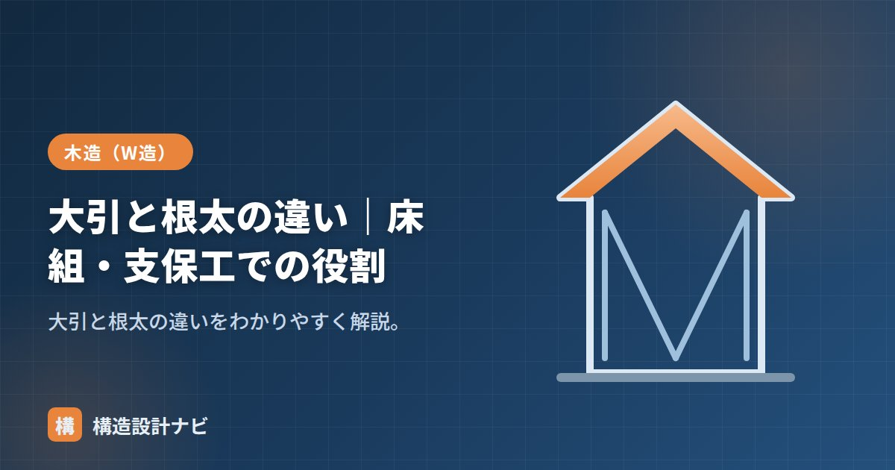

大引と根太の違い｜床組・支保工での役割

大引（おおびき）と根太（ねだ）とは、どちらも床組を構成する横材のことですが、太さ・間隔・役割がそれぞれ異なります。さらに紛らわしいことに、コンクリートの型枠を支える「支保工（しほこう）」の世界にも同じ「大引」「根太」という呼び名が登場し、床組とは別の場面で似た考え方が使われています。この記事では、床組と支保工の両方の文脈で、大引と根太がどう役割分担しているのかを整理します。
- 根太は床板を直接支える細い材、大引はその根太を支える太い材
- 「細い材を太い材で受ける」という2段構えの考え方は床組と支保工で共通
- 支保工では「せき板→根太→大引→支柱」の順で荷重を伝える
違いの比較
| 根太 | 大引 | |
|---|---|---|
| 役割 | 床板を直接支える | 根太を支える |
| 太さ | 細い（45角〜45×60など） | 太い（90角程度） |
| 間隔 | 303〜455mm程度 | 910mm程度 |
| 支えるもの | 大引・床梁が支える | 床束・土台が支える |
根太は床板の下に一定間隔で並べる細い材で、人や家具の荷重を面的に受け止めます。大引はその根太を受けるさらに下の横材で、根太より太い断面を使い、より広い間隔（約910mm）で配置されます。それぞれの部材の詳しい仕様・継手の位置については「大引とは？」で解説しています。
力の伝わり方（床組）
細い根太が床板を受け、太い大引がその根太を受け、さらに大引を床束が支えるという2段構えの力の流れです。部材が細い順に荷重を受け渡していくことで、それぞれの部材にかかる負担のバランスを取りながら、最終的に基礎へと荷重を伝えます。
根太レス工法との関係
近年増えている根太レス工法では、根太を省き、厚み24〜28mm程度の構造用合板を大引や梁に直接張ります。根太を省略することで施工の手間が減り、床の遮音性・剛性が向上しやすいというメリットがありますが、その分、合板自体に根太と同等以上の荷重分散性能が求められます。根太レスであっても、大引や床梁は引き続き必要な部材です。工法を選ぶ際は、遮音性・コスト・施工の手間などを踏まえて、在来の根太工法とどちらが現場に適しているかを比較検討するとよいでしょう。
支保工での役割
型枠の支保工でも「大引」「根太」という言葉を使います。コンクリートのスラブ型枠では、上からせき板 → 根太 → 大引 → 支柱（サポート）の順で受けます。床組と同じく「細い材（根太）を太い材（大引）で受ける」考え方であり、木造建築とコンクリート工事という異なる分野でも、荷重を段階的に集約する合理的な構造の知恵が共通して使われている点は興味深いところです。
よくある間違い
「大引」と「根太」の呼び方は、床組と支保工で対象物が違うため混同しやすい用語です。会話や図面で「大引」「根太」が出てきた際は、床組の話なのか型枠支保工の話なのか、文脈を確認するようにしましょう。また、太さ・間隔の数値も工法や荷重条件によって変わるため、目安として理解し、実際の設計値は都度確認することが大切です。
工事監理で若い職人と話していると、「根太」が床組の話なのか支保工の話なのか噛み合っていないことがある。同じ言葉でも現場が違えば指す部材が変わるので、まず対象を指差し確認してから打合せを始めるようにしている。
大引と根太の直交関係（図解）
現場での見分け方
| 見分けるポイント | 根太 | 大引 |
|---|---|---|
| 上下の位置 | 上（床板の直下） | 下（根太の下） |
| 断面の大きさ | 細い（45角〜45×105） | 太い（90角が標準） |
| 並ぶ間隔 | 密（@303〜455mm） | 粗い（@900mm程度） |
| 何に載っているか | 大引・土台・根太掛け | 床束・土台・大引受け |
| 2階では | 2階根太（または根太レス） | 存在しない（梁が受ける） |
迷ったときは「太いほうが大引、細いほうが根太」で判断すればほぼ間違いません。もう一つ確実なのは、床束が付いているのが大引だという点です。根太に床束が付くことはありません。
1階と2階で構成が変わる
大引は床束で下から支えられる部材なので、地面に接する1階の床にしか存在しません。2階の床では下から支える束が立てられないため、代わりに梁（床梁・小梁）が根太や床板を受けます。
つまり役割の対応は「1階の大引 ＝ 2階の床梁」です。ただし大引は床束で細かく支えられているため90角で足りるのに対し、2階の梁は柱から柱まで飛ばす必要があるため、105×240のようにはるかに大きな断面になります。同じ「根太を受ける材」でも、支え方が違うと必要な断面が何倍も変わる——これは構造の考え方そのものです。
よくある質問
Q1. 大引と根太はどちらが上ですか？
根太が上、大引が下です。床板の直下に細かい間隔で並ぶのが根太（45角程度、@303〜455mm）、その根太を下から受ける太い材が大引（90角程度、@900mm程度）です。両者は必ず直交して配置されます。
Q2. 2階の床にも大引はありますか？
ありません。大引は床束で下から支える部材なので、地面に接する1階の床にしか使いません。2階では梁（床梁・小梁）が同じ役割を果たします。柱から柱まで飛ばす必要があるため、断面は大引よりはるかに大きくなります。
Q3. 根太レス工法では大引は不要になりますか？
1階では引き続き必要です。根太レス工法は根太を省き、厚さ24〜28mmの構造用合板を直接大引や梁に留める工法なので、合板を受ける大引そのものは残ります。ただし合板の支持間隔に応じて大引の間隔を詰める（@455mm程度）ことがあります。
まとめ
- 根太は床板を直接支える細い材、大引はその根太を支える太い材。
- 根太は303〜455mm、大引は910mm程度の間隔。
- 支保工でも「せき板→根太→大引→支柱」と同じ考え方で使う。
- 根太レス工法でも大引は引き続き必要な部材である。